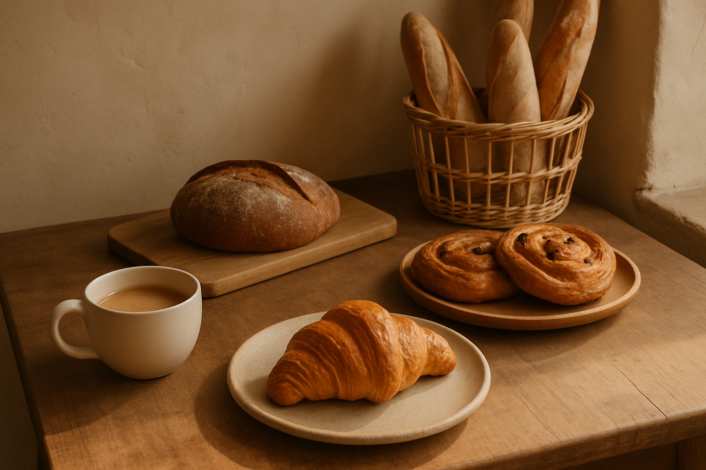
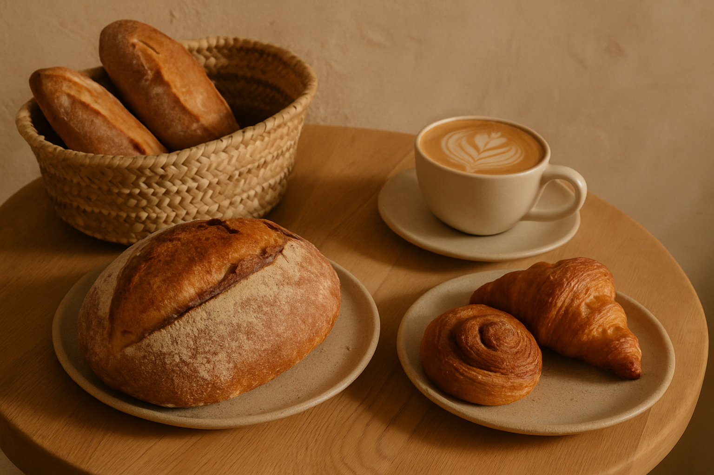
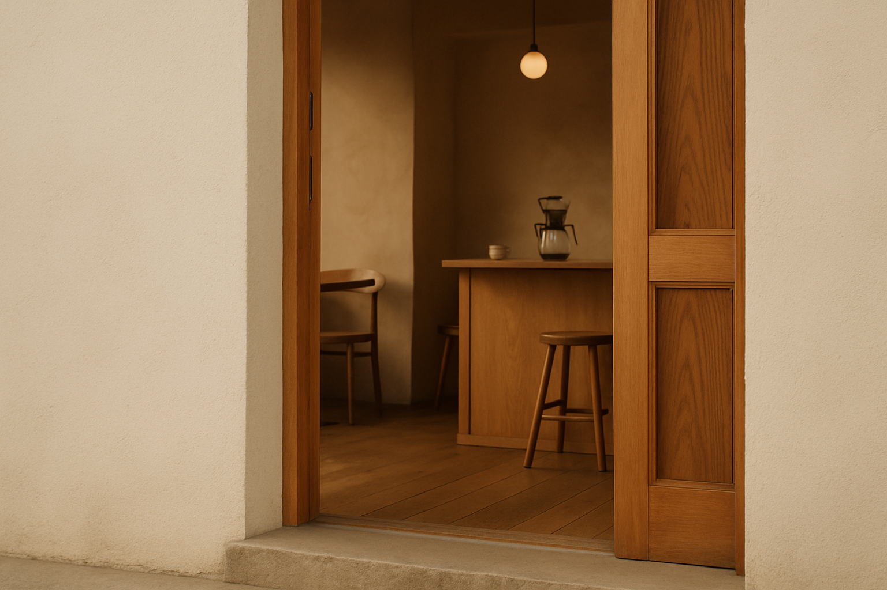

01
Bread Style
Consider whether you prefer a crisp crust, a soft crumb, or something suited to sharing.
Planning guide
Use this visual guide to clarify preferences before confirming any details directly.
Explore Ideas
Planning notes
Start with the qualities that matter to you, then use them to guide a direct conversation.

01
Consider whether you prefer a crisp crust, a soft crumb, or something suited to sharing.
02
Think about the pace of the day, the people joining you, and the kind of pause you want.
03
Use sweetness, richness, texture, and familiar tastes to describe your preferences clearly.

Planning context
Think about how a possible stop fits with nearby errands, the pace of the day, and the setting you prefer. Treat the image as inspiration rather than a view of the business.
Before planning
Service and availability details are not confirmed. Check directly with the business before making plans.